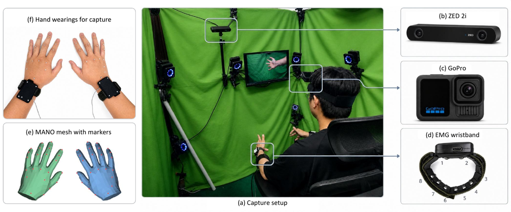
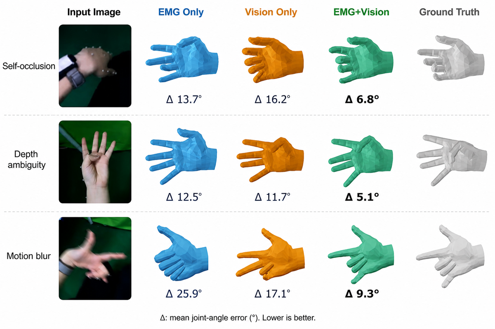
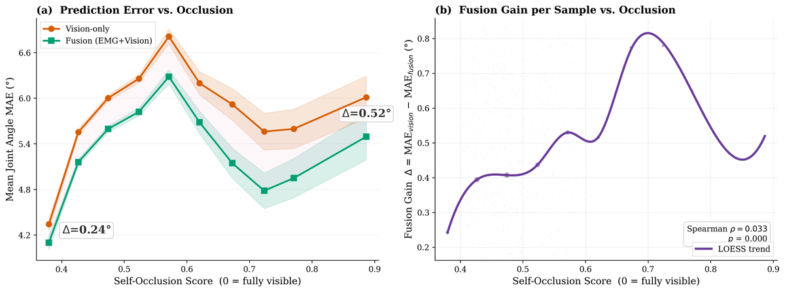

Cross-modality note. EMGFormer is evaluated on every
predicted frame, while vision and fusion baselines are evaluated on
the window-center frame only — the two columns are not directly
comparable. Fusion improves matched lightweight generic vision
baselines; whether EMG also helps a larger visual backbone is an
open question.
EgoEMG: A Multimodal Egocentric Dataset
with Bilateral EMG and Vision for Hand Pose Estimation
Abstract
We present EgoEMG, the first dataset jointly providing bilateral wristband EMG and IMU, egocentric RGB, external RGB-D, bimanual MANO annotations with wrist joint angles, and per-frame gesture class labels. It covers 41 participants performing 60 gesture classes (30 single-hand, 30 bimanual) over more than 10 hours of recording, with a learning-based markers2mano pipeline that brings the invalid-frame rate down to 3.6%, a 4.3 mm mean marker-to-mesh alignment error, and a unified 22-DoF joint-angle target (20 finger + 2 wrist angles).
The accompanying benchmark evaluates three tasks under one label space — EMG-to-pose, vision-to-pose, and EMG+vision fusion — across cross-gesture, cross-user, and combined generalization splits. Across all three, EMGFormer sets a strong EMG reference and a residual fusion model improves over matched lightweight vision-only baselines, with the largest gains on the gesture split and a positive correlation between hand self-occlusion and fusion gain in the occlusion-stratified analysis.
Dataset at a glance
41
participants
60
gesture classes
10 h
recorded motion
16
EMG channels (8 per wrist)
2 kHz
EMG sample rate · 60 Hz ego / 30 Hz ext. / 120 Hz mocap
22 DoF
joint angles per hand

Capture setup. Bilateral EMG wristbands (with co-located IMU), head-mounted GoPro egocentric wide-angle RGB (60 Hz), external ZED 2i RGB-D (30 Hz), and FZMotion optical motion capture with 21 reflective markers per hand, synchronized to a common timeline.

Per-gesture-family fusion gain. Rows group gesture families by self-occlusion, depth ambiguity, and motion blur; the Δ column shows the MAE improvement of EMG+Vision over Vision-only within each family.

Occlusion-stratified analysis. Fusion gain (MAEvision − MAEfused) increases with hand self-occlusion, supporting the claim that EMG contributes most when visual evidence is degraded.
Benchmark — three tasks, one label space
01 — EMG-to-pose
EMGFormer maps a 200 ms sliding window of raw bilateral EMG to the 22-DoF target, with a TDS-style temporal convolutional frontend and a RoPE Transformer decoder. Predicts every frame in the window.
02 — Vision-to-pose
Six generic backbones (ResNet-{18, 50, 152} with ImageNet init; ViT-{S, B, L} with DINOv2 init) and the hand-specialized WiLoR baseline regress the same 22-DoF target from a single 256×256 egocentric hand crop at the window center.
03 — EMG+vision fusion
A residual fusion model predicts a corrective offset to a vision-only estimate (initialized from a vision-only checkpoint) from a paired EMG window. The residual head is zero-initialized so the model starts at the vision baseline.
Results
On EMG-to-pose, EMGFormer-M and EMGFormer-L tie for the best average MAE (14.2°), with M matching L using less than half the parameters. On vision-to-pose, the V-RN family sets a clean visual reference (5.9° → 5.3° → 5.1° as backbone capacity grows). On fusion, F-RN18+S improves over its matched lightweight V-RN18 baseline (5.4° vs 5.9°) but does not yet match the larger V-RN50/V-RN152 — fusion gain concentrates in the high-occlusion regime and on lightweight backbones.
EMG-to-pose MAE (degrees per joint, lower is better)
Single-seed runs (seed 0). Avg. is the per-sample weighted mean across all test splits. Highlighted rows are ours.
| Method | Params | Gesture | User | Both | Avg. |
|---|---|---|---|---|---|
| EMGFormer-M | 6.6M | 11.8 | 15.6 | 17.4 | 14.2 |
| EMGFormer-S | 3.5M | 12.8 | 15.6 | 17.4 | 14.7 |
| EMGFormer-L | 16.3M | 11.7 | 15.7 | 17.7 | 14.2 |
| vemg2pose | 6.0M | 15.0 | 16.3 | 17.3 | 15.9 |
| NeuroPose | 6.4M | 15.8 | 15.7 | 16.3 | 16.1 |
Vision-only and EMG+vision MAE (degrees per joint, lower is better)
Vision and fusion are evaluated on the window-center frame only. Highlighted row is the fusion result.
| Input | Method | Gesture | User | Both | Avg. |
|---|---|---|---|---|---|
| Vision | V-RN18 | 5.1 | 6.8 | 6.8 | 5.9 |
| Vision | V-RN50 | 4.5 | 6.2 | 6.2 | 5.3 |
| Vision | V-RN152 | 4.3 | 6.1 | 6.1 | 5.1 |
| EMG+Vision | F-RN18+S | 4.6 | 6.4 | 6.4 | 5.4 |
| Vision | V-WiLoR | 3.9 | 5.6 | 5.7 | 4.7 |
Method glossary
EMGFormer-{S,M,L}— our model family (S=3.5M, M=6.6M, L=16.3M params).vemg2pose— Salter et al. 2024 recurrent EMG-to-pose baseline (TDS+LSTM), re-implemented for 22-DoF.NeuroPose— Liu et al. 2021 convolutional encoder–decoder EMG baseline.V-RN{18,50,152}— ImageNet-pretrained ResNet regressors on the center-frame crop (11.5M / 23.5M / 58.2M params).V-WiLoR— WiLoR fine-tuned from a MANO-based hand-pose checkpoint, the strongest single-frame visual reference (4.7° Avg).F-RN18+S— residual fusion: V-RN18 (initialized from a vision-only checkpoint) + EMGFormer-S residual head, zero-initialized so training starts at the vision baseline (15.5M params).
Resources & data access
Code
Released under the MIT License. The MANO model and WiLoR checkpoint are not redistributed — obtain them from the original releases and point the configs at them.
Dataset
Released under CC-BY-NC 4.0 for research use only. All recordings were collected with informed consent under an IRB-approved protocol at Tsinghua University, with participants compensated at a standard hourly rate. Facial regions in egocentric and external video are automatically blurred, and participant identifiers are replaced with anonymous numeric IDs. The dataset will be mirrored on a stable platform (e.g. Zenodo) with a DOI and versioned releases.
Correspondence: [email protected]
BibTeX
@misc{xi2026egoemg,
title = {{EgoEMG: A Multimodal Egocentric Dataset with Bilateral EMG and Vision for Hand Pose Estimation}},
author = {Xi, Ziheng and Yu, Jiayi and Wang, Yitao and Duan, Yanbo and Feng, Jianjiang and Zhou, Jie},
year = {2026},
howpublished = {arXiv preprint (under review)},
institution = {Tsinghua University},
url = {https://zhenqis123.github.io/EMG2PP/egoemg_academic_homepage_horwitz/}
}